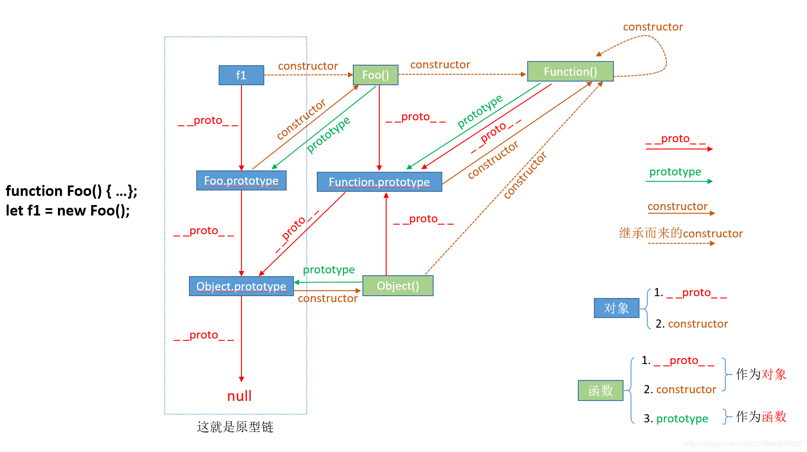

知识点
概念1
- 我们需要牢记两点：①__proto__和constructor属性是对象所独有的；② prototype属性是函数所独有的，因为函数也是一种对象，所以函数也拥有__proto__和constructor属性。
- __proto__属性的作用就是当访问一个对象的属性时，如果该对象内部不存在这个属性，那么就会去它的__proto__属性所指向的那个对象（父对象）里找，一直找，直到__proto__属性的终点null，再往上找就相当于在null上取值，会报错。通过__proto__属性将对象连接起来的这条链路即我们所谓的原型链。
- prototype属性的作用就是让该函数所实例化的对象们都可以找到公用的属性和方法，即f1.proto === Foo.prototype。
- constructor属性的含义就是指向该对象的构造函数，所有函数（此时看成对象了）最终的构造函数都指向Function
概念2
- Object 是所有对象的爸爸，所有对象都可以通过 proto 找到它
- Function 是所有函数的爸爸，所有函数都可以通过 proto 找到它
- 函数的 prototype 是一个对象
- 对象的 proto 属性指向原型， proto 将对象和原型连接起来组成了原型链
试题
如何理解原型？如何理解原型链？
知识点：原型
原型如何实现继承？Class 如何实现继承？Class 本质是什么？
1、子类的函数中call父类函数，并prototype指向new 出来的父类。
2、prototype=Object.create(xxx.prototype)把父类原型赋值给子类
3、class通过exntends关键字，本质还是函数
扩展
https://www.jianshu.com/p/85899e287694
https://blog.csdn.net/cc18868876837/article/details/81211729
示例图
原型/原型链图
